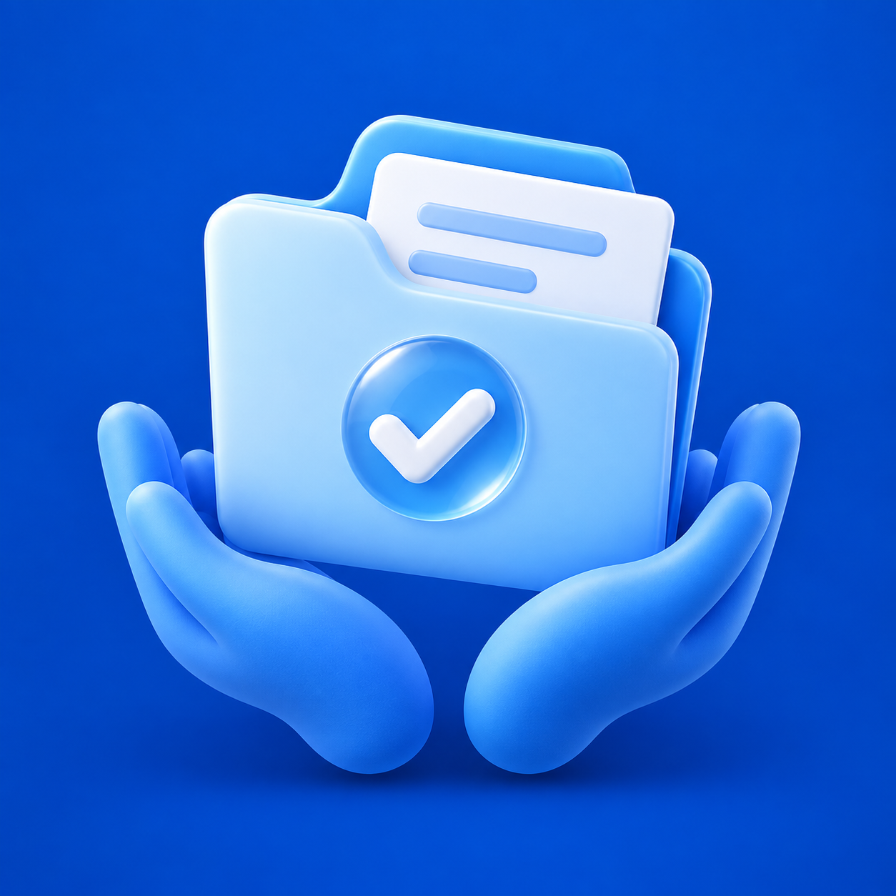

지원금 도우미
현재 내부 TestFlight 1.0.0(빌드 6)을 배포했습니다. App Store 공개 출시는 준비 중입니다.
App Store 공개 출시 링크를 준비 중입니다. 이 페이지는 앱 기능과 지원 안내를 공유하는 공개 페이지입니다.
조건별 지원 제도를 살펴보고, 관심 제도의 신청 준비를 기기에 이어서 기록하세요. 나이대·지역·가구유형·소득 구간으로 최대 5개의 조건을 저장해 다시 사용할 수 있습니다. 제도를 저장한 뒤 서류·단계 체크, 직접 선택한 진행 상태, 확인 예정일과 준비 메모를 남기고 조건별·상태별 대시보드에서 확인하세요. 공식 안내·신청 링크는 해당 기관으로 연결됩니다. 앱은 신청을 대신하거나 정부의 실제 접수·선정·지급 상태를 조회하지 않습니다. 확인 예정일은 내가 정한 일정이며 기관 마감일이나 자동 알림이 아닙니다.
기본 기능은 무료로 제공하고, 아래 안내된 추가 혜택은 별도의 명시적인 보상 광고 버튼에서 선택합니다.
2026년 기준 중위소득과 비율별 의미, 기초연금의 공식 선정기준·기준연금액, 생계급여의 기준 중위소득 32% 기준, 근로장려금의 2026년 신청·2025년 귀속 소득·재산 기준을 구분해 안내합니다. 상세 신청 준비의 공식 근거 범위는 기초연금·생계급여·근로장려금 3개 제도이며 다른 제도는 담당기관의 최신 공고를 확인하도록 안내합니다. 중위소득 구간과 기초연금 소득인정액은 같은 기준이 아닙니다. 개인별 최종 자격·실수령액을 산출하거나 수급을 보장하지 않습니다. 정부기관과 연계·인증된 공식 앱이 아닙니다.
빌드 6의 광고·추가 혜택 안내
아래 안내는 현재 내부 TestFlight 빌드 6에 적용됩니다. 실제 테스트 광고의 배너 표시·보상 완료와 기기 내 저장은 Simulator에서 확인했습니다. App Store 공개 출시나 실물 기기의 유료 광고 노출을 확인했다는 뜻은 아닙니다.
처음 광고용 정보 공유 안내의 ‘계속’은 추적 허용에 동의하는 버튼이 아닙니다. iOS 권한이 미결정일 때만 시스템 선택 화면을 열며 이미 허용·거부·제한된 권한은 반복 요청하지 않습니다. 추적을 거부하거나 제한된 상태라도 앱이 활성 상태이고 별도 UMP 광고 개인정보 선택 상태가 광고 요청을 허용하면 비맞춤 배너·선택형 보상 광고를 요청할 수 있습니다. 미결정·비활성 상태 또는 권한·동의 확인 실패에는 광고를 요청하지 않습니다. 설정 변경과 활성 복귀 시 현재 상태를 다시 확인합니다.
비맞춤 광고 요청과 게시자 자사 식별자 비활성 설정을 유지합니다. 추적 허용은 혜택의 조건이나 보상이 아닙니다. 비맞춤 광고가 광고 사업자의 모든 정보 수집·측정 처리를 없애는 것은 아닙니다. 하단 ‘광고 동의 설정’과 홈의 ‘오픈소스 라이선스’는 작은 한 줄 메뉴에서 누를 때 설명·읽기 화면을 엽니다. 표시 중인 광고와 고정 메뉴 높이를 본문·시트에 예약하도록 구성했습니다. 광고 재고와 권한·동의 상태에 따라 광고가 노출되지 않을 수 있습니다.
참고 조건 비교·지원 제도 조회와 프로필·수동 신청 준비 기록은 계속 무료로 이용합니다. 별도의 명시적인 광고 버튼에서 혜택이 선택한 최대 3개 지원 제도의 담당기관·공식 안내·확인 항목 메모 1개임을 확인하고 선택합니다. 긴 전면 광고가 표시될 수 있고 길이·닫는 단계는 광고마다 다릅니다. 실제 SDK의 보상 완료 콜백 뒤에만 새 혜택을 적용하고 기기 저장·읽기 확인 실패를 성공으로 안내하지 않습니다. 완료 전 취소·실패·단순 광고 표시만으로 새 혜택을 만들지 않습니다. 이미 받은 결과의 열람과 본문·앱 안내 링크 복사는 계속 이용할 수 있습니다. 앱 실행·탭 이동·결과·타이머가 자동 전면 광고를 시작하지 않습니다.
제도별 공식 안내를 확인하기 위한 메모이며 수급 자격·지급액·실제 신청 처리 상태를 확정하지 않습니다. 기본 기록은 직접 관리하는 기기 기록이며 기관 조회 결과가 아닙니다.
도움이 필요할 때
운영 및 문의: Factory iOS 앱 운영자
이메일로 문의하기
앱 이름, 앱 버전, iOS 버전, 발생 화면과 재현 순서를 알려 주세요. 스크린샷은 계좌정보·아이의 생년월일·위치 등 개인 정보를 가리고 보내 주세요. 비밀번호·인증번호·주민등록번호·계좌번호는 보내지 마세요.
저장된 기록과 데이터
최대 5개의 조건 이름과 나이대·지역·가구유형·소득 구간, 선택한 관심 제도, 서류·단계 체크, 직접 기록한 신청 진행 상태와 변경 시각, 내가 정한 확인 예정일, 준비 메모를 이 기기에 저장합니다. 장려금·연금 안내 화면에 입력하는 소득·재산은 화면의 참고 비교에 사용하며 운영자 서버로 신청서나 준비 기록을 보내지 않습니다. 주민등록번호·계좌번호·정부 서비스 로그인 정보는 입력받지 않습니다. 조건 이름에 실명을 넣거나 메모에 개인 식별 정보를 적지 마세요.
신청 기록 요약을 공유·복사하기 전에 내용을 확인할 수 있습니다. 기본 요약에는 제도 이름·내가 기록한 상태·체크 개수와 앱 안내 링크만 들어갑니다. 조건 구간은 직접 포함 옵션을 켤 때만 추가되며, 조건 이름·준비 메모·확인 예정일은 이 요약에 포함하지 않습니다. 공유를 선택한 경우 본인이 선택한 앱과 대상의 처리 방식이 적용됩니다.
저장한 제도는 개별 삭제할 수 있고, 조건을 삭제하면 그 조건에 연결된 신청 준비 기록도 함께 지워집니다. 전체 초기화는 확인 후 조건과 신청 준비 기록을 이 기기에서 삭제합니다. 기기에만 저장되므로 운영자가 원격 복구할 수 없습니다. 앱 삭제나 기기 저장 공간 삭제 시 자료가 사라질 수 있으며 앱 정리(Offload)는 자료가 남을 수 있습니다. iOS 백업·복원은 본인의 기기·계정 설정에서 관리하세요.
연결 또는 표시 오류
인터넷 연결과 iOS 권한 설정을 확인하고 앱을 다시 열어 주세요. 공개 자료의 기준일과 출처 표시를 확인해 주세요. 누락되거나 오래된 자료를 발견하면 화면과 기준일을 문의로 알려 주세요.